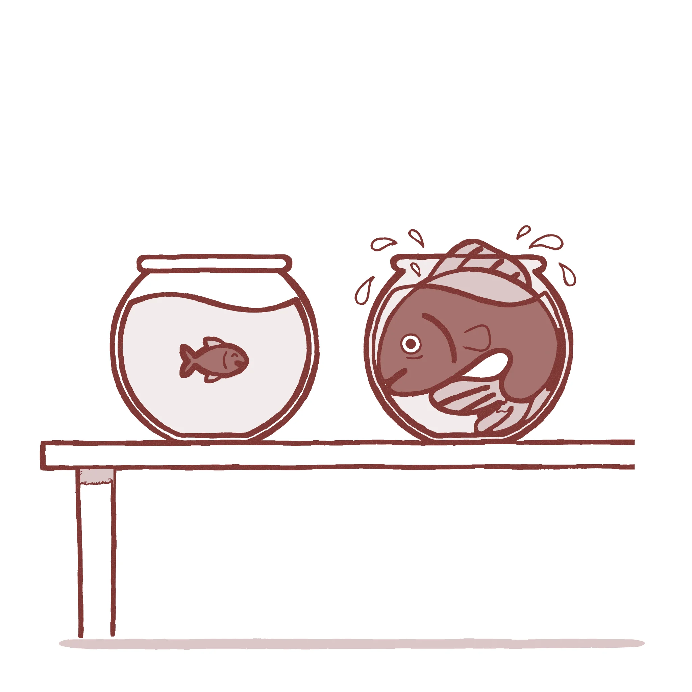
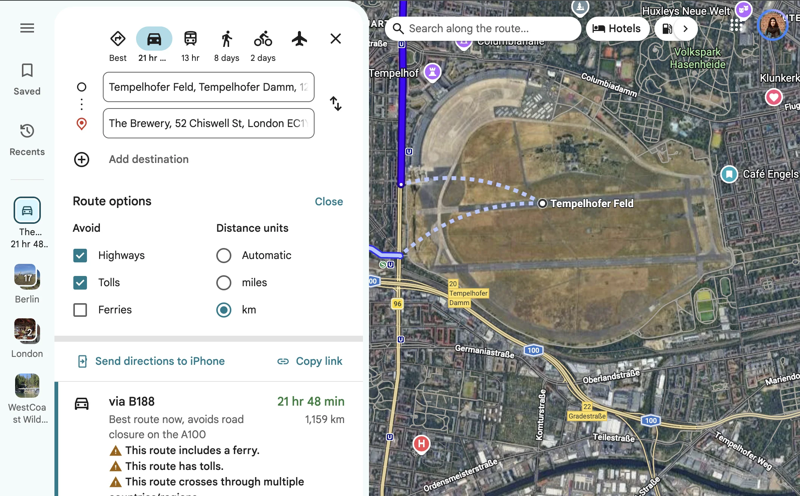
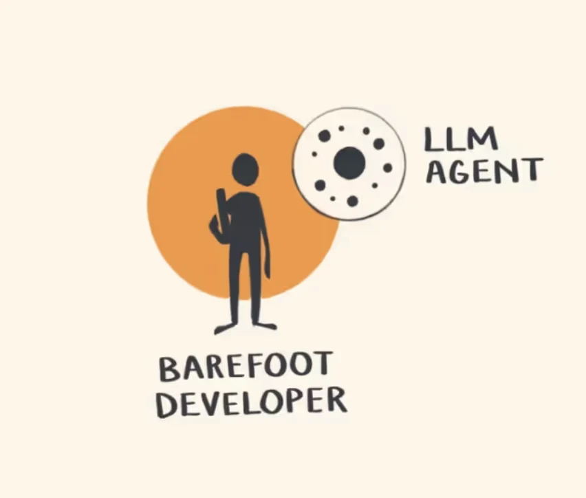
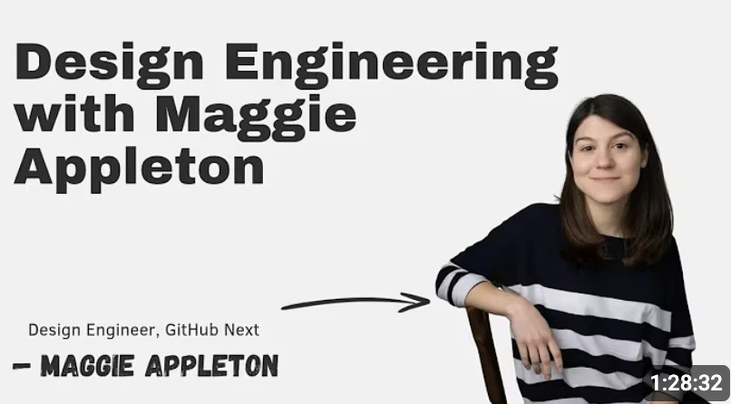

We talk to six people with unique daily struggles
and run into the hard limits of adapting a single interface.
Using AI we could unlock an infinite number of interfaces,
generated with empathy to our individual personal situations,
capabilities and needs.
-
 Simon Lenz
Simon Lenz
Software Engineer—DeepL -
 Matt Seccafien
Matt Seccafien
Design Engineer—DeepL
AI & accessibility today
Chatbots and agents are a revolution for accessibility
User
research
Interviews
We talked with (not about) six people who have a daily physical or cognitive disability and asked them about their setups and their AI use.

Molly
Uses AI as an assistant, not a replacement.
“I do use AI, but only as an assistant for what I’m looking for. Not to do the searching from scratch.”

Michael
Uses AI as training wheels, not autopilot.
“[…] you have to put your name to things. If it went ahead, did a bunch of tasks, emailed people, and I couldn’t really take it back — that feels … uncomfortable, giving it that much autonomy.”

Sarah
With context about you, AI can help you in ways you didn’t anticipate.
“I was really struggling one day … but then, interestingly, it came up with a really insightful reason: it was the drop in barometric pressure. The change had been so fast. And it said that’s really common with people with brain injuries.”

No revolution
- Chatbots & agents: helpful tools
- The simple interface is very accessible
- Trust & reliability are the problem
- We want assistants, not replacements
Amelia
AI should remove the disability tax on everyday tasks.
“Part of the enjoyable thing in life is struggling through things. Having everything taken care of for you takes away a bit of the fun.”

Rose
Everyone’s settings are different and incompatible.
“I live in a disabled house […] all our settings are different, even across our iPads. It’s actually an in-house joke: I can’t look at my husband’s iPad, he can’t look at mine, and the kids hate using either.”

Myron
An interface where you’re already a power user
“If I had an AI box, I could tell it to line up all my headers from cell A1 to A20 and just send it. That would save so much time. That would be a life changer for me.”

The limits of
adaptability
Today’s model
One interface for the average person, with tools and settings on top
…and they start to conflict

One UI doesn’t fit everyone
- Setups are very personal
- Adaptations conflict with each other
- Configuration costs energy
- Standards have limits

A UI generated for your needs.
- your circumstances
- your state of mind
- your external environment
Empathy is
our point
Intent What you’re trying to do
Empathy Who you are right now
AI already generates UIs


One task, many UIs
![Three stacks side by side, each starting from the same intent, I’d like to translate this text, and gathered by a bracket into an arrow pointing down at the UI made from it. Rose’s: condition, hyperphotosensitivity; environment, on the couch, curtains drawn; situation, a medium energy budget today; and below it an iPad with a dark, dim translator. Myron’s: a spine injury, steering by head; at his desk, headset on; focused on a spreadsheet; and below it a monitor with a translator that only listens. A third, unnamed person’s, drawn fainter: needs reading glasses; in a crowded subway, one hand free; running late, heatwave, stressful; and below it a phone with big buttons in reach of the thumb. Past it, another empty stack runs off the edge.](media/personas/demo-two-people.webp)
What empathy gains

- Rose No redesign shocks,
no clash of settings - Myron Higher-order commands,
voice-native UI - Sarah No stack of
incompatible plugins
No adaptation necessary anymore.
Launching
is creating
Apps aren’t built for you

The economics changed
“We are excited about a future where users […] have access to an infinite catalog, where the right ephemeral interface is generated on the spot tailored for their need.”
Google Research
Rose
(8 months later)
Her own app picks a game for her energy budget.
Built by her, for her.

Chatbots and agents are a revolution for accessibility
By the people,
for the people

Local-first Conference, Berlin, 2024

Imagine everything
is bespoke
- Lack of privacy
- Instability
- Isolation
- More dependent on AI
Thank you!
Your UI
is not my UI
your-ui-is-not-my-ui.cartogram.ca
-
Simon Lenz
Software Engineer—DeepL -
 Matt Seccafien
Matt Seccafien
Design Engineer—DeepL